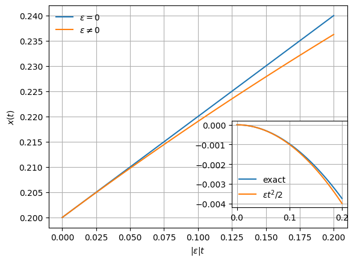

Analytical vs Numerical Tools in Control Systems
Abstract
Here is a collections of concepts from an introductory class in control systems that I wishes were explained in a different way. Unreviewed.
Exponentiation of a Matrix
We would be given the linear time-invariant equation
\[ \dot{x}(t) = Ax(t) \tag{1}\]
with initial condition \(x(0)=x_0\), where \(A\) is a \(n\times n\) matrix with constant coefficient. In control systems, this equation comes either from the free evolution of the system (without control input, \(u=0\)) or from the closed loop evolution \(A-BL\) under the state feedback law \(u=-Lx\).
The solution is
\[ x(t) = e^{At}x_0. \]
One way to compute the matrix exponential is to use the Jordan normal form decomposition \(AV = VJ\) since most often than not, \(A\) cannot be diagonalised. \(J\) is a block diagonal matrix where each Jordan block \(J_i\) would have \(\lambda_i\) on the diagonal and \(1\) on the superdiagonal.
The exponent \(e^{Jt}\) is also block diagonal and each block has the form \[ e^{J_it} = e^{\lambda_it} \begin{bmatrix} 1 & t & \frac{t^2}{2!} & \ldots & \frac{t^{n-1}}{(n-1)!} \\ & 1 & t & \ldots & \frac{t^{n-2}}{(n-2)!} \\ & & \ddots & \ddots \\ & & & 1 & t \\ & & & & 1 \end{bmatrix}. \]
The problem is that the Jordan decomposition is numerically unstable as explained in MATLAB’s help, if one bothered to read it and should be used only for symbolic computation in exact arithmetics. We happily ignored this fact, although Dörfler made the effort to remind us.
The numerical evalution of \(e^{At}\) requires care as pointed out in Moler and Loan (2003) and MATLAB’s help for expm.
Analytical Time-Evolution of Defective Matrices
This section is a remark on a purely analytical result.
We would study the closed-loop stability as a function of a paramter. For some values of the parameter, the closed-loop matrix becomes defective (that is, it does not have a complete set of linearly independent eigenvectors) and it only admits a Jordan normal form. Analytically, the solution of the defective matrix looks different than the solution where the eigenvalues are slightly apart but is no substantial difference: after all, we are dealing with a linear system and we expect no surprises.
As an example, take the second order autonomous differential equation \[ \ddot{x} + \epsilon \dot{x}=0. \tag{2}\] This equation could describe a mechanical system that obeys Newton’s second law \(F=ma\) with the term \(\epsilon \dot{x}\) representing friction.
One way to solve it requires us to write down the characteristic polynomial \(\lambda^2 - \epsilon \lambda=0\): for \(\epsilon\ne 0\) there are two distinct solutions; for \(\epsilon=0\) only one with double multiplicity. Then \(x(t)\) becomes \[ x(t) = \begin{cases} \tilde{x}_0 + \tilde{x}_1\frac{e^{\epsilon t}-1}{\epsilon} & \epsilon \ne 0 \\ \tilde{x}_0 + \tilde{x}_1 \cdot t & \epsilon = 0 \end{cases} \] where \(\tilde{x}_0\) and \(\tilde{x}_1\) are the two initial conditions for \(x(0)\) and \(\dot{x}(0)\).
For short time evolutions \(|\epsilon t| \ll 1\), the exponent has Taylor expansion \(e^{\epsilon t}\approx 1+\epsilon t\) and the solution for \(\epsilon\ne 0\) can be approximated by \[ x(t)\approx \tilde{x}_0+\tilde{x}_1 t. \] This approximation holds for a time sufficiently long to “detect” that \(\epsilon\ne 0\). For shorter times, the two solutions are indistinguishable, see Figure 1.
Asymptotic Stability
For linear systems, the stability properties of the plant are analysed by looking at the eigenvalues of the plants matrix \(A\) (or the stabilized plant \(A+BL\) where the feedback control law \(L\) is obtained e.g. by ):
- negative (real part of) eigenvalue \(\rightarrow\) the mode is stable;
- positive eigenvalue \(\rightarrow\) the mode is unstable;
- zero eigenvalue \(\rightarrow\) the mode is marginally stable.
Asymptotic stability is mentioned often to such an extent that we (students) believe it is important.
It is a useless concept for practical purposes. As an engineer I want to have much tighter bounds: what good is it to me to know that the plane I board will eventually stabilize under a gust of wind?
Can a System Be Useful Only if it is Stable?
Lukas Ortmann made a brilliant remark: “Even if the system is unstable, it does not mean I cannot use it. Just make sure that it still remains”bounded” within the experimental time.”
This obvious comment is brilliant because it is made in the context of the introductionary courses that fail to communicate that the stability per se is not relevant without comparing with the experiment time scale. The Sun is an unstable system and will turn into a red giant star in 5 billion years (give or take a few million years) (see for instance here). Do I lay awake at night because of this?
The State-Space Representation is Better Than the Transfer Function
The state space representation has better numerically properties than the transfer function.
Numerical rank and Floating Point Arithmetics
If the columns of the matrix \(A\) are linearly dependent, \(A\) has a null-space. A way to check the number of linearly independent columns is to use the MATLAB or Julia function rank. This is implemented by computing svd(A) and counting how many singular values are above a given threshold which is typically set to be a few ulp times \(A\)’s largest singular value.
This means that the numerical rank depends on
- an arbitrarily set threshold;
- the numerical precision of the data type and roundoff errors;
- the data quality, in case of experimental data.
In the example below, the third column of the matrix \(A\) is a linear combination of the first two: therefore \(A\) has therefore mathematical rank 2 (and null-space of dimension 1):
A = let
v = [1, 2, 4]
w = [3, -2, 5]
hcat(v, w, 3v-2w)
end
@show rank(A)
B = A + 1e-10*randn(3,3)
@show rank(B)
@show rank(B; rtol=1e-7)
nothingrank(A) = 2
rank(B) = 3
rank(B; rtol = 1.0e-7) = 2but on the perturbed matrix \(B\) by terms of order \(10^{-10}\), the rank is 3. Changing the tolerance makes the matrix have rank 2 again.
Use of rank for the Controllability and Observability Matrices
The discussion about the rank came up during exercise hour in the context of the controllability matrix.
A system is controllable if the controllability matrix is full rank. Mathematically this may be true, but what if I designed a locomotive that uses bike brakes1? The controllability matrix is full rank. And oh, did I mention that the plant has a settling time of 2 days and 7 hours? What the discussion fails to make explicit is that what is relevant is not whether the system is controllable but rather to what degree it is controllable.
It seems wrong to use the discrete function rank in a continuous world. What is a good threshold for controllability? Why is a car that requires 10 turns of the steering wheel controllable but another car is incontrollable if it requires 11 turns? Moreover from experience, when I obtain experimental values with an accuracy of 1% or better, I have won the lottery. Should I set the threshold to \(10^{-2}\)?
I have asked Prof. Zeilinger (eventual errors are mine). Her answer was
- it should only be applied to system models obtained from first principles and not, for instance, by system identification;
- no better definition of controllability/observability exists.
References
Moler, Cleve, and Charles Van Loan. 2003. “Nineteen Dubious Ways to Compute the Exponential of a Matrix, Twenty-Five Years Later.” SIAM Review 45 (1).
Footnotes
They are cheaper than train-grade brakes.↩︎